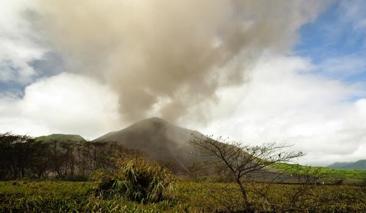
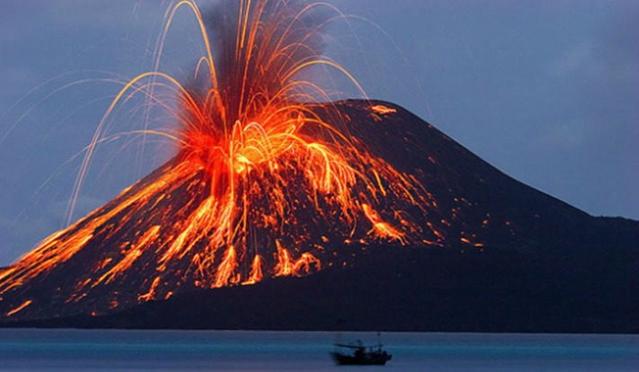

CURIOSIDADES

1. Estamos falando do Yasur, localizado na ilha de Tanna, em Vanuatu. Está em erupção constante há 111 anos.

2. Mauna Loa é o maior vulcão do mundo com 4.169 metros de altura e 90 km de largura! Está ativo há mais de 700 mil anos e podemos encontrá-lo no Havaí.
3. Existem cerca de 1.500 vulcões ativos no nosso planeta Terra, mas a maior parte deles encontram-se debaixo dos oceanos.
4. A erupção vulcânica que causou maior número de vítimas fatais ocorreu em Tambora, em 1815, e matou em torno de 100.000 pessoas na Indonésia. Ela escureceu os céus no outro lado do planeta.
5. Perto dos vulcões, o solo é muito rico e fértil. Por esse motivo, algumas pessoas constroem a sua casa ao pé de vulcões. Porém este é um ato extremamente perigoso, se for um vulcão ativo ou adormecido.
| Nome | Localização | Tamanho (m) | Tempo de existência (anos) |
|---|---|---|---|
| Kilauea | Havaí | 1247 | 600.000 |
| Vesúvio | Nápoles, Itália | 1281 | 200.000 |
| Sakurajima | Osumi, Japão | 1117 | 13.000 |
| Etna | Sícilia, Itália | 3550 | 500.000 |